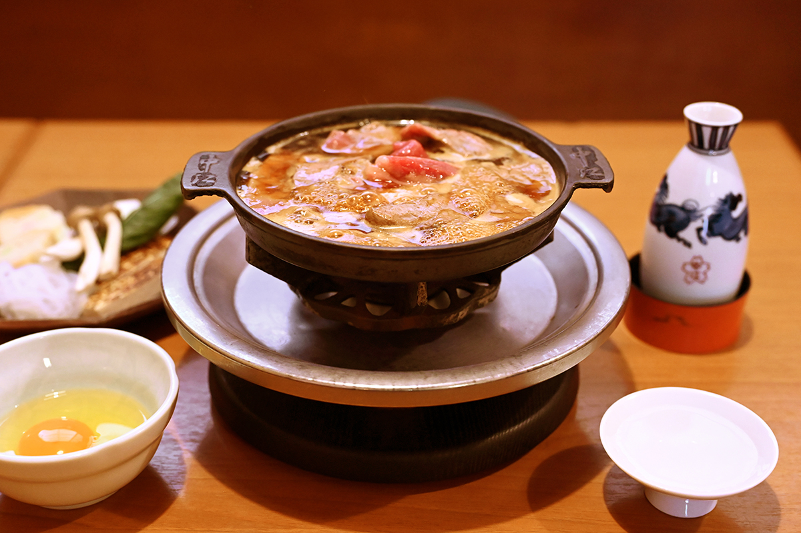
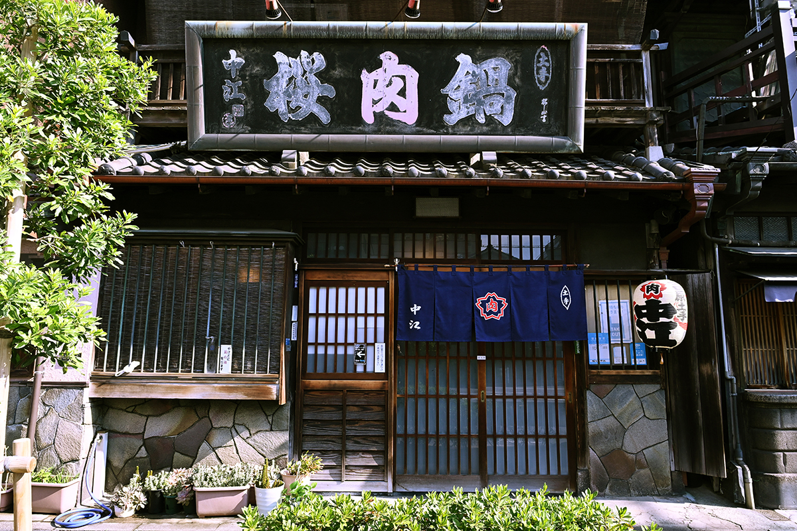
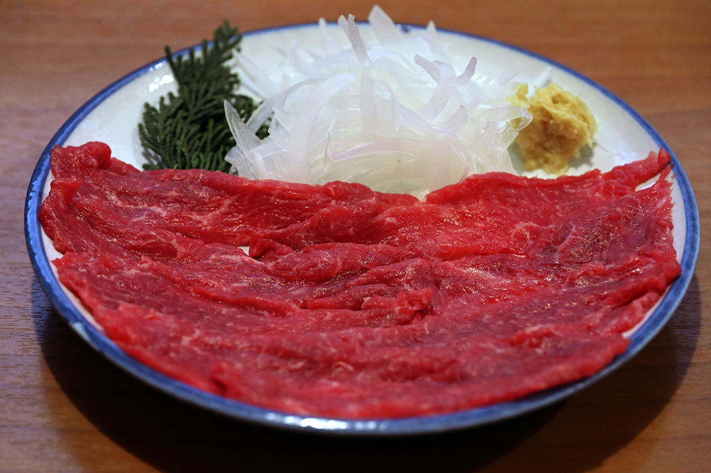
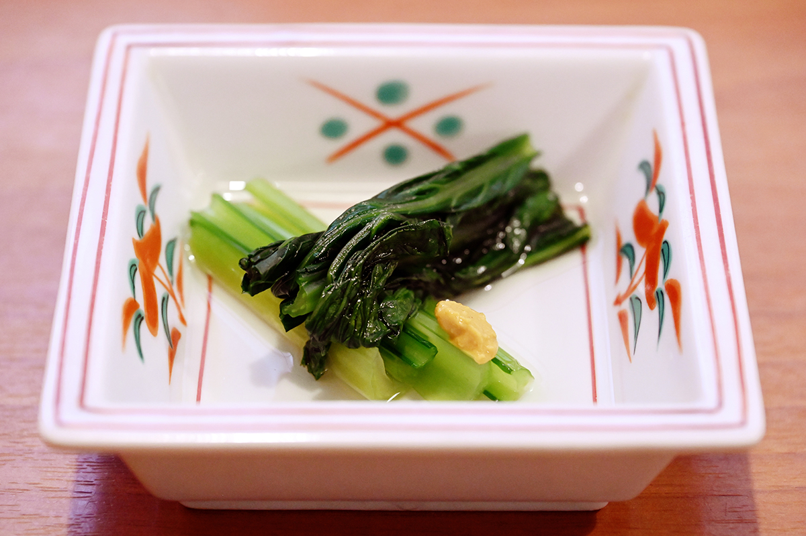
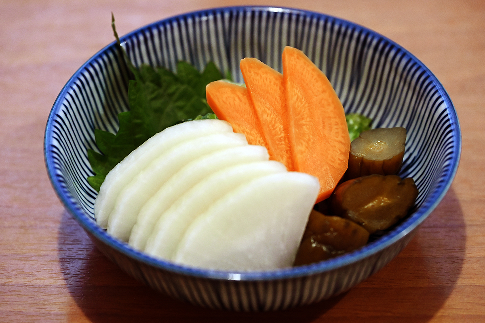
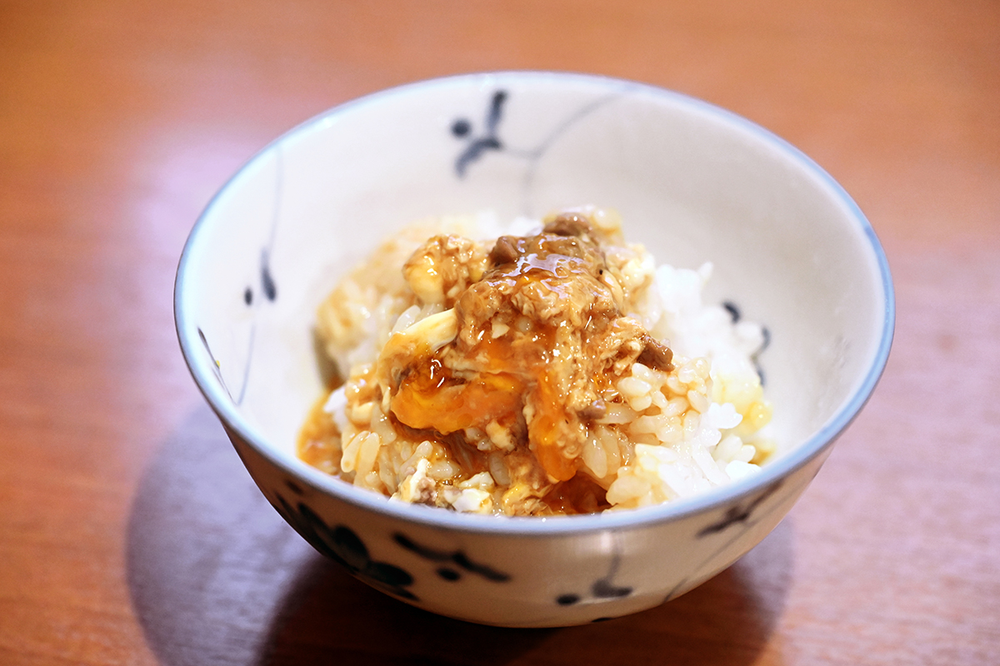
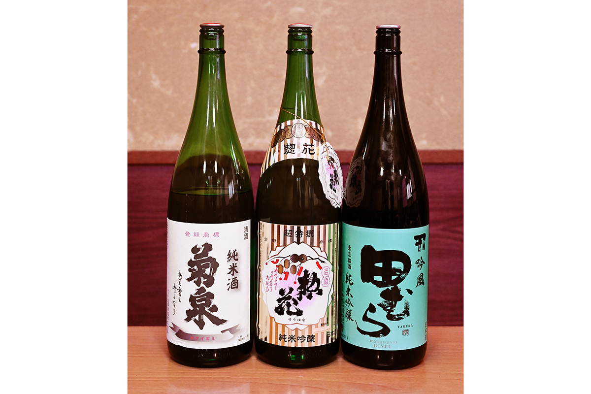
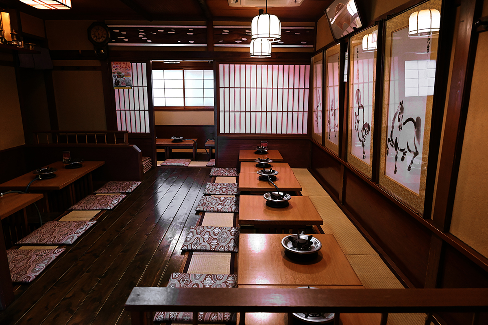

Токио · Тайто · еда
«Сакура-набэ Накаэ»: котелок с кониной из старого квартала Ёсивара

Сакэ испокон веку разгоняет мирские заботы, и пить его в Токио хочется со вкусом, как пили в старом Эдо. Для этого есть котелок с кониной, а готовят его в «Накаэ», последнем заведении такого рода у бывшего квартала Ёсивара.
История
Почему конину называют сакурой
В эпоху Эдо есть мясо зверей было запрещено, и горожане выкручивались с помощью иносказаний. Конину называли «сакура», вишня, кабанятину «ботан», пион, оленину «момидзи», клён. В эпоху Мэйдзи (1868–1912) запрет сняли, и вместе с модой на всё западное в Иокогаме прославился котелок с говядиной, «гюнабэ».

У бывшего квартала Ёсивара, где работали дома с куртизанками, родился свой котелок, «сакура-набэ», с кониной. По одной из версий, всё началось с гостей, которые спускали в Ёсиваре все деньги и продавали лавкам по соседству коня, на котором приехали. В лучшие годы эпохи Мэйдзи вокруг Ёсивары работали несколько десятков заведений с сакура-набэ. «Накаэ» открылось в 1905 году, и к 2023 году оно осталось единственным, кто хранит этот токийский вкус, рождённый в Ёсиваре.
Ханако Усуи, повар японской кухни, которая изучает старую кухню Эдо, помнит, как ели конину в её семье.
«В старых кварталах Токио сукияки раньше само собой означало конину. У нас дома котелок с вьюнами был обычной едой, а сакура-набэ ели по особым дням»
Ханако Усуи
Мясо
Конина, которая тает во рту
Конина в «Накаэ» только японская: лошади рождаются на Хоккайдо, а растят их специально для заведения в Курумэ, городе на Кюсю. Там, где главное блюдо это сырая конина «басаси», берут лошадей в 1–2 года, пока мясо ярко-красное. «Накаэ» ждёт 7–8 лет, и мясо успевает набрать жир, в котором много вкуса. Удивляет и мягкость: ломтик почти тает во рту.
В центре котелка лежит горка жира, а под ней спрятан соус из мисо. Его растворяют в бульоне «варисита», и получается основа котелка. Этот мисо придумал основатель «Накаэ», и рецепт не выходит за пределы заведения. Хозяин советует снимать конину, пока в ней остаётся немного красного: так она вкуснее всего. Овощи и прочее, «дзаку», кладут в котелок, когда мясо уже съедено, и бульон, впитавший вкус конины, делает их особенно хорошими.

Гастрономический журналист, давний завсегдатай токийских питейных заведений, знает, как здесь сидеть.
«В этом общем зале на татами, в одиночку, не глядя на басаси и тартар, сразу заказать сакура-набэ и с подогретым сакэ „Синкамэ“ потихоньку таскать из котелка. Это лучше всего»
гастрономический журналист
В здании, где чувствуется история, перед котелком со сладким запахом наливаешь сакэ из бутылочки токкури, которую, говорят, расписывал хозяин второго поколения. И время течёт неторопливо и приятно.
«Сакура-набэ в хайку считается словом зимы. Зимой, когда мясо набирает жир, оно особенно вкусное»
Ханако Усуи
Меню
Что заказать к котелку
Сакура-набэ готовят из конины только японского происхождения высшего сорта, часть можно выбрать: корейку, вырезку, грудинку и другие. В 2023 году котелок стоил от 2980 иен, «дзаку» (лапша сиратаки, пшеничные хлопья фу, жареный тофу и другое) 850 иен, всё можно добавить отдельно.


«Если в заведении вкусные соленья, значит, вкусно всё»
Ханако Усуи
После котелка не стоит уходить. В бульон, впитавший вкус мяса, кладут обрезки конины и мягкий тофу, вливают взбитое яйцо, дают ему схватиться и выкладывают на рис.

К котелку пьют сакэ. В 2023 году бутылочка токкури (144 мл) «Синкамэ» токубэцу дзюммай стоила 1080 иен, бокал «Тамура» дзюммай гиндзё 980 иен, бокалы «Сохана» дзюммай гиндзё и «Кикуидзуми» дзюммай по 780 иен. Пиво Asahi, разливное или в бутылке, стоило 780 иен, хайбол 850 иен, сливовое вино умэсю 600 иен, были и сётю.


«Сакура-набэ Накаэ»
- Адрес
- Токио, район Тайто, Нихондзуцуми, 1-9-2
- Телефон
- +81 3-3872-5398
- Часы работы
- 17:00–22:00, в субботу, воскресенье и праздники 11:30–21:00
- Выходные
- понедельник (если праздник, то на следующий день)
- Сайт
- sakuranabe.com
Фото: Кэндзи Итано.